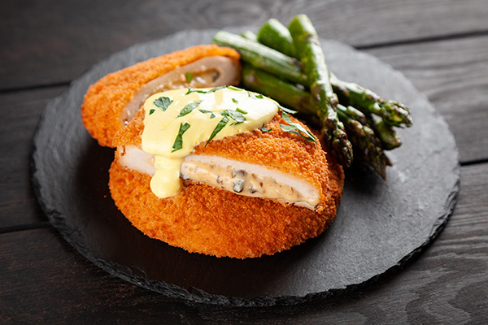

Crispy and Creamy Chicken Cordon Blue
Crispy, Creamy Chicken Cordon Bleu is a delightful dish that combines the best of textures and flavors. Imagine tender chicken breasts seasoned to perfection, filled with layers of savory ham and melted Swiss cheese. To top it all off, it’s served with a luscious, creamy Dijon sauce that adds a tangy finish, elevating the dish to a whole new level of deliciousness. Perfect for a special dinner or to impress your guests!
Ingredients
Chicken
- 🐔4 boneless, skinless chicken breasts
- 🐔Salt, to taste
- 🐔Pepper, to taste
- 🐔1 tablespoon garlic powder
- 🐔1 tablespoon onion powder
- 🐔1 tablespoon onion powder
- 🐔16 slices Swiss cheese
- 🐔½ lb. ham, thinly sliced
- 🐔Peanut oil, or vegetable oil, for frying
- 🐔1 cup all-purpose flour
- 🐔4 eggs, beaten
- 🐔2 cups panko breadcrumbs
Creamy Dijon Sauce
- 🐔3 tablespoons butter
- 🐔2 cloves garlic, minced
- 🐔3 tablespoons all-purpose flour
- 🐔2 cups milk
- 🐔¼ cup Dijon mustard
- 🐔1 cup shredded parmesan cheese
- 🐔Salt, to taste
- 🐔Pepper, to taste
Preparation
- Sprinkle the chicken breasts with salt, pepper, garlic powder, and onion powder, tossing to coat evenly.
- On a cutting board, place a chicken breast between two sheets of plastic wrap and pound until about ½ inch (1 cm) thick with a meat mallet, rolling pin, or heavy pan.
- Remove the plastic wrap and place 2 slices of Swiss cheese, then 2 slices of ham, then another layer of Swiss cheese, and another layer of ham. Evenly roll the chicken and place onto a new sheet of plastic wrap.
- Wrap the chicken in the plastic wrap tightly and use the excess plastic on the sides to twist, firming up the roll of chicken cordon bleu as you work. Tie the excess plastic. Repeat with the remaining ingredients, then chill the rolls in the fridge to set for 30 minutes.
- Meanwhile, preheat a tall-sided pan with 2 inches (5 cm) of oil to 325°F (170°C).
- After the rolls are set, prepare 2 separate large, wide dishes with the flour, beaten egg, and breadcrumbs. Dredge the chicken first in the flour, then the egg, and then breadcrumbs.
- Place the breaded chicken cordon bleu in the oil and cook for about 5 minutes per side, or until the outside is an even golden brown. If a good color is achieved and the chicken’s center is still not 165°F (75°C), place the chicken cordon bleu on a wire rack set over a baking sheet and finish the chicken in the oven at 325°F (170°C) until that temperature is reached.
- Meanwhile, prepare the sauce. In a 1-quart saucepan over medium heat, melt the butter and cook the garlic until soft. Add the flour and whisk for 1 minute.
- Add the milk and whisk until fully combined with the roux and no lumps remain. Continue whisking until the mixture comes to a simmer and has thickened.
- Add the mustard, Parmesan cheese, salt, and pepper and whisk to combine. Remove the pan from the heat.
- Slice the chicken and serve drizzled with Dijon sauce.